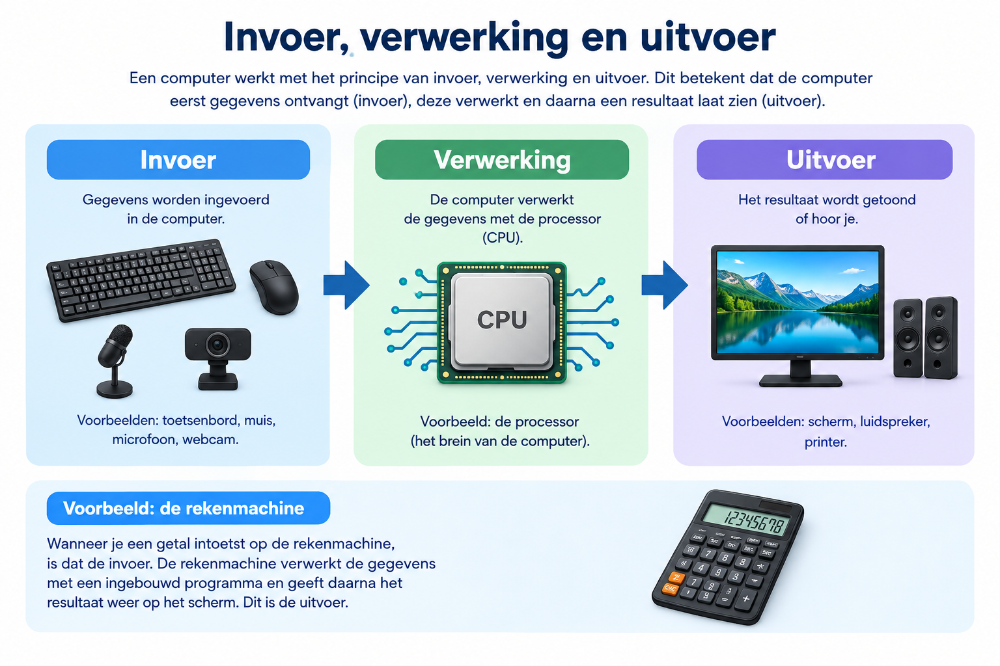

Een computer werkt meestal volgens drie belangrijke stappen: invoer, verwerking en uitvoer. Zo kan een computer gegevens ontvangen, ermee rekenen en daarna een resultaat laten zien.
Invoer is informatie die je aan een computer geeft. Voorbeelden zijn typen op een toetsenbord, klikken met een muis of praten tegen een microfoon.
Bij verwerking gaat de computer met de ingevoerde gegevens aan het werk. De processor voert opdrachten uit en berekent bijvoorbeeld een antwoord.
Uitvoer is het resultaat dat uit de computer komt. Je ziet bijvoorbeeld tekst op een scherm, hoort geluid via luidsprekers of krijgt een document uit een printer.

Ik heb deze video gekozen omdat hij uitlegt hoe een computer gegevens ontvangt, verwerkt en omzet in een resultaat. Bekijk de video zelf en controleer of je de voorbeelden begrijpt.
Bekijk de video over invoer, verwerking en uitvoer op YouTube